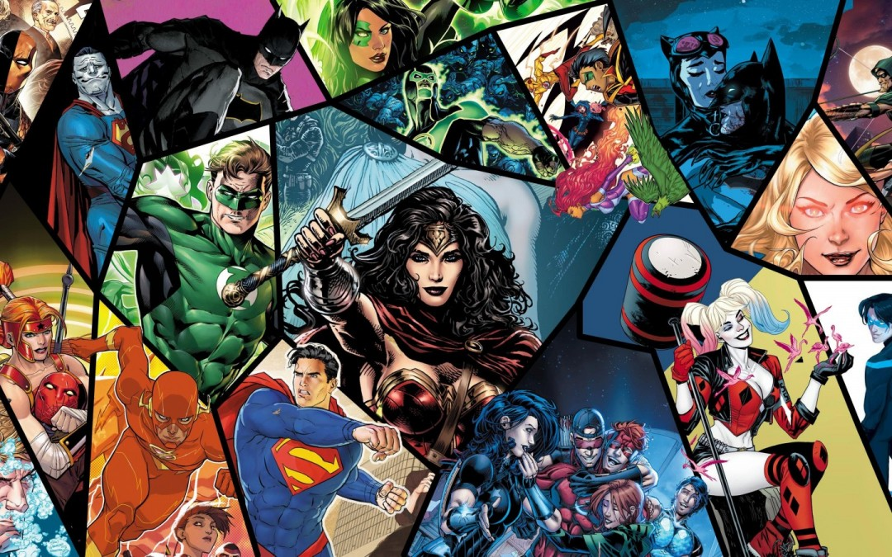

Alias: Superman
Nombre terrícola: Clark Kent
Nombre kriptoniano: Kal-El
Némesis: Lex Luthor
Uno de los principales fundadores de la ligay el último hijo de Krypton. La historia original de Superman relata que nació con el nombre de Kal-El en el planeta Krypton; su padre, el científico Jor-El, y su madre Lara Lor-Van, lo enviaron en una nave espacial con destino a la Tierra cuando era un niño, momentos antes de la destrucción de su planeta. Fue descubierto y adoptado por Jonathan Kent y Martha Kent, una pareja de granjeros de Smallville, Kansas, que lo criaron con el nombre de Clark Kent y le inculcaron un estricto código moral. El joven Kent comenzó a mostrar habilidades superhumanas, las mismas que al llegar a su madurez decidiría usar para el beneficio de la humanidad.

Alias: Batman
Nombre verdadero: Bruce Wayne
Némesis: The Joker
Batman, es el alter ego del multimillonario Bruno Díaz, un empresario que gana millones con sus empresas, y asimismo dedicado a las actividades benéficas, quien durante su infancia perdió a sus padres como consecuencia de un asesinato del cual él mismo fue testigo y que sería la causa fundamental de su decisión de crear a ese superhombre justiciero. Fue tal el horror que vivió y la desesperación que le generó la perdida tan violenta de sus padres que cuando pudo concretarlo ideó a Batman para vengarse y también para usarlo a favor de la consecución de un mundo más justo y sin criminales. Tras ese hecho trágico, Díaz, jura venganza y se compromete a luchar contra el crimen en su ciudad, Ciudad Gótica.

Alias:Mujer maravilla / Wonder Woman
Nombre verdadero: Princesa Diana
Némesis: Cheetah
Es una Superheroina, una Amazona, Embajadora de estas en el mundo exterior y Miembro Fundador de la Liga de la Justicia. Fue concebida a través de su Madre por una diosa. La Mujer Maravilla es de los pocos integrantes de la liga que puede competir contra Superman y derrotar por poco a Shazam. Es experta al combate cuerpo a cuerpo al estilo amazona. Y tiene larga longevidad como ventaja, al igual que Superman y Tornado Rojo.
Alias: Linterna verde
Nombre verdadero: Hal Jordan
Némesis: Siniestro
El era un piloto de pruebas de aviones de combate, hasta que Abin Sur, un linterna verde que patrullaba el sector, se estrello en el planeta tierra. Hal encontrandolo muy malherido resulto ser el heredero del poder del agonizante linterna verde. Una vez que se le heredó el anillo asumio su identidad secreta como justiciero. Hal Jordan aparece con el resto de la Liga en Cadmus donde El Equipo luchaba con Blockbuster.
Alias: Flash
Nombre verdadero: Barry Allen
Némesis: Flash inverso (Eobard Thawne)
Es un Miembro Fundador de la Liga de la Justicia, Es el Mentor de Chico Flash. A flash se le conoce por ser el "El Hombre Más Rápido del Mundo". Barry es la Segunda Persona que ha Asumido la Identidad de Flash, el Primero fue Jay Garrick.son cuatro personas las que han asumido el rol de flash pero solo tres son los mas populares y cada uno a ido superandose en velocidad : Jay garrick fue el primer flash, el segundo Barry allen y luego el mas veloz de todos Wally West. Considerando tambien que el cuarto flash fue Bart allen, pero a este no se le conoce tanto como el flash, debido a esto se quedo como kid flash o impulse.
Alias: Aquaman
Nombre verdadero: Rey Orin
Némesis: Manta Negra
Es un Miembro Fundador de la Liga de la Justicia, El Mentor de Aqualad ,Y el Rey de la Atlántida. Como el rey de los océanos de la Tierra, se comporta de una manera muy real, responsable y formal, especialmente en su propia casa. Sin embargo, parece que su puntos débiles, y que permite el desacuerdo con su mando a un cierto grado, si se lleva la sabiduría.
Némesis: Superman
Su carencia de principios éticos y odio hacia Superman le han llevado a construir una armadura de kriptonita verde para enfrentarse al hombre de acero. Además, es un personaje de mucha actualidad, ya que es un millonario que pretende dominar USA y se presentó a las elecciones del 2000 convirtiéndose en presidente.
Némesis: Batman
Antes de ser un villano, era un patético comediante que tuvo que recurrir a realizar actos delictivos para poder pagar algunas deudas. Su tuvo que poner la máscara de Red Hood, pero tuvo la mala suerte de encontrarse cara a cara con Batman, cayendo en residuos tóxicos que le dejaron la cara destrozada.
Némesis: Mujer Maravilla
Nacida como heredera de una gran fortuna en el antiguo sitio familiar en Nottinghamshire, tras un ritual, desafortunadamente, hubo un efecto secundario imprevisto en la transformación. El sacrificio había requerido una virgen y Minerva no calificó. Por lo tanto, en lugar de otorgarle juventud y vitalidad, después de la transformación se volvió débil y frágil. Solo en la noche de luna llena, cuando se convirtió en Cheetah, volvió a ser fuerte.
Némesis: Linterna Verde
En un principio, fue uno de los mejores Lanterns y mentor del propio Hal Jordan. Pero su visión de la justicia le hizo abandonar el camino de los héroes, convirtiéndole en el villano que conocemos. Mientras que Green Lantern usa el poder de la valentía representado con el color verde, Siniestro usa el amarillo que representa el miedo. Y hasta tiene su propia corporación de Lanterns: los Siniestro Corps.
Némesis: Flash
Eobard descubrió cómo su propia vida estaba vinculada a la de su héroe: estaba destinado a convertirse en uno de los mayores villanos de Barry Allen, una revelación que llevó a Eobard a desquiciarse. Cuando finalmente replicó el accidente químico que le otorgó a Flash supervelocidad, Eobard adoptó una nueva identidad: la del Flash inverso, una subversión perversa de todo lo que representa Flash. Con poderes y habilidades similares a los de Flash, el Reverse-Flash es inquebrantable en su determinación de oponerse y destruir todo lo que es importante para Flash.
Némesis: Aquaman
Manta Negro era un huérfano autista colocado en la ciudad de Gotham 's Arkham Asylum . Se sentía cómodo en agua helada, pero las sábanas de algodón le dolían terriblemente. Debido a que los asistentes de Arkham no sabían cómo lidiar con el autismo, terminarían sujetándolo a la cama mientras luchaba y gritaba cada vez que intentaban acostarlo. En esta versión, el joven Black Manta también quedó fascinado cuando vio a Aquaman en la televisión.
Crisis en Tierras Infinitas sacudió todo el Universo DC hasta su núcleo, remezcló la línea de tiempo y anunció el comienzo de una barajadura de continuidad que se repetiría cada diez años a partir de entonces.
La crisis, que literalmente introdujo una amenaza antimonitorial que sacudió la tierra, reunió a docenas de héroes del multiverso y dio lugar a las escenas de muerte impactantes de Barry Allen y Supergirl (obviamente, es una lección de que los buenos héroes nunca mueren, simplemente se trasladaron al CW). Marv Wolfman y George Pérez hicieron malabares con un universo lleno de personajes, reuniendo más paneles y acción en un solo número de lo que muchas series modernas pueden encajar en el oficio. La tierra vivió, la tierra murió, y treinta años después, nació una verdadera epopeya que ha resistido la prueba del tiempo.
Pocos eventos han generado una expectación tan grande como La Muerte de Superman, escrita por Dan Jurgens, Jerry Ordway, Louise Simonson y Roger Stern en 1992. A lo largo de siete ejemplares regulares, se siguó el rastro de destrucción y muerte de Doomsday, una amenaza que sólo Superman pudo detener, a costa de dejar la vida en el campo de batalla.
Batman: El final del juego". Esta historia épica comienza con Batman derrotando a toda la Liga de la Justicia, pero el verdadero corazón de la historia tiene que ver con el más reciente ataque del Guasón, que ha encontrado una manera de apuntar al valor de todos los principios de Batman.
La existencia del multiverso en DC Comics data del año 1962, con la aparición de la historia Flash of Two Worlds!, de Gardner Fox, donde los héroes de la Edad de Oro regresaron a escena. Esto nos llevó al primer gran crossover de DC, Crisis on Infinite Earths, de Marv Wolfman y George Pérez, que redefinió a muchos personajes. En 2011 Geoff Johns nos trajo una historia donde Flash salva a su madre de morir, pero esto ocasiona un desastre en la línea de tiempo que tendrá que enmendar.
Frank Miller vuelve a romper moldes con ésta miniserie, la cual es la primera en publicarse en la continuidad de Batman, Inició en BATMAN #404 y culminó en BATMAN #407, algo que no era común en los cómics de los años ochenta.
Kal-El no aterriza en el corazón de la América rural, sino en el medio de la Unión Soviética. Basándose sólo en ese concepto, se podría pensar que es una historia de Supermán malvado. Hasta cierto punto, es cierto. Redson presenta momentos en los que Superman es malvado, Lex Luthor es un héroe y cualquier otra perspectiva distorsionada que puedas asociar con la historia de Elseworlds.
Despues de varios eventos donde el Universo DC tuvo redefiniciones, reacomodos, y aventuras suigeneris, Geoff Johns decide hacer un relanzamiento del Universo DC, donde no sólo Wally West advierte el inicio de un gran evento con importantes repercusiones, otros personajes como los integrantes de Watchmen tendrán un papel más que protagónico
La Liga de la Justicia es el equipo de superhéroes más grande en la historia del Universo DC. El escritor Jeff Johns estuvo al frente del título desde 2011 hasta 2016. Sinceramente, la historia más apropiada temáticamente que ha contado es "Justice League 6 Injustice League", que trata sobre el brote del virus Amazo, pero su historia final, "Darkseid War", es un cuento épico digno de los grandes héroes de DC.
Esta historia tiene dioses y monstruos, batallas épicas y conflictos personales, arte impresionante y escritura mágica, ¡está todo aquí! Esta historia lo tiene todo: dioses y monstruos, batallas épicas y conflictos personales, arte impresionante y escritura mágica. Es una historia increíble con dos de los villanos más fuertes de DC enfrentándose entre sí mientras la Liga de la Justicia se encuentra entre ellos.
Una oscura epopeya que mezcla la fuerza heroica de Superman con un cuento de un fugitivo enfermo. El villano Doomsday (que una vez mató al Hombre de Acero durante la historia de la muerte de Superman) ha desarrollado nuevos poderes arrojando gas viral dañino de su cuerpo. Todos los infectados se transforman en una copia de doomsday, llenando el mundo de estos monstruos mientras Superman lucha por detener la pandemia global causada por su mayor enemigo.
En última instancia, el propio Superman está infectado y debe luchar para salvarse a sí mismo y al planeta al mismo tiempo. Hasta que el actual cómic de Joshua Williamson sobre Batman/Superman no se publique en rústica, "Superman: Condenado" seguirá siendo la mayor historia de Superman de la historia, enfrentando a los kriptonianos contra una epidemia viral.
El Linterna Verde es un personaje generalmente subestimado en el desarrollo de una historia emocionante. Sin embargo, en 2008 es considerada por muchos como la versión final de la historia de "Linterna Verde". Comienza con la premisa relativamente simple de que Siniestro ha formado un ejército para enfrentarse a los Cuerpo de Linternas Verdes. Este es un concepto que muchos otros cómics y formas de entretenimiento han jugado en el pasado.
Mientras que este tipo de cómic es notorio por la forma en que toma eventos que de otra manera no hubieran ocurrido y sacude la dinámica de sus respectivos universos, Las Guerra de Siniestro, una verdadera clase magistral sobre cómo jugar con la mitología de la serie y los diversos escritores que contribuyeron a La Guerra de Siniestro no son prisioneros en cuanto al estudio de la historia de Linterna Verde
En uno de los eventos más importantes de la etapa de Rebirth, Batman encontró un icónico, pero misterioso botón de una cara sonriente, el cual combinado con la máscara de Psycho-Pirate, la cual trae el regreso de Flash Reverso, quien desata una serie de eventos que repercutirán en un mediano y largo plazo en todo el Universo DC.
La noche más negra es una rara historia de zombis sobrenaturales en la que el zombismo se propaga no por enfermedad, sino por la influencia de un anillo del espacio exterior que ejerce la magia emocional de la propia muerte.
Centrándose en la tradición de la Linterna Verde, este cómic se centra en las luchas en tierra de aquellos que luchan en las calles desde los confines del espacio. Los héroes se ven obligados a enfrentarse a su verdadero yo, mientras que los villanos sucumben ante una fuerza más oscura de la que nunca antes habían enfrentado.